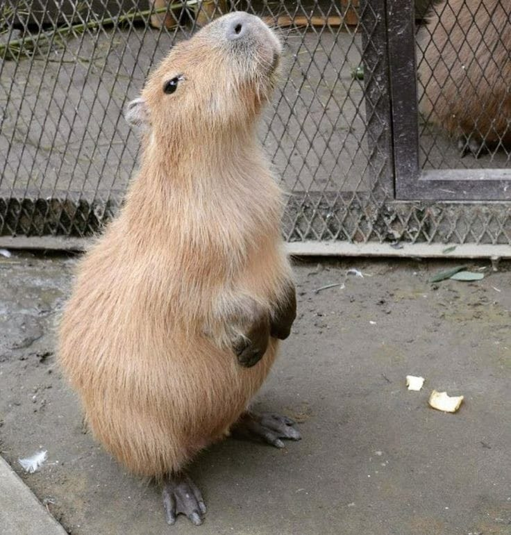

The capybara or greater capybara (Hydrochoerus hydrochaeris) is a giant cavy rodent native to South America. It is the largest living rodent and a member of the genus Hydrochoerus. The only other extant member is the lesser capybara (Hydrochoerus isthmius). Its close relatives include guinea pigs and rock cavies, and it is more distantly related to the agouti, the chinchilla, and the nutria. The capybara inhabits savannas and dense forests, and lives near bodies of water. It is a highly social species and can be found in groups as large as 100 individuals, but usually live in groups of 10-20 individuals.
Its common name is derived from Tupi ka'apiûara, a complex agglutination of kaá (leaf) + píi (slender) + ú (eat) + ara (a suffix for agent nouns), meaning "one who eats slender leaves", or "grass-eater". The scientific name, both hydrochoerus and hydrochaeris, comes from Greek ὕδωρ (hydor "water") and χοῖρος (choiros "pig, hog").